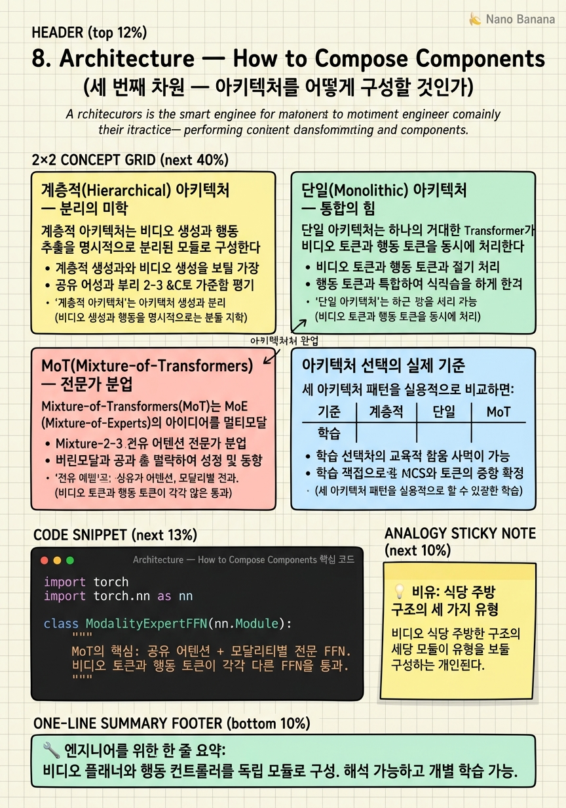

Architecture — How to Compose Components

🎯 학습 목표
- 계층적 아키텍처에서 비디오 생성과 행동 추출이 어떻게 분리되는지 설명할 수 있다
- 단일 아키텍처(Monolithic)의 장점과 학습 어려움을 이해한다
- MoT에서 모달리티별 전문가가 어떻게 동작하는지 설명할 수 있다
- 각 아키텍처 패턴의 대표 모델을 연결할 수 있다
- 어떤 시나리오에서 어떤 아키텍처를 선택해야 하는지 판단할 수 있다
WAM의 세 번째 설계 차원은 "비디오 생성, 행동 추출, 언어 이해 등의 컴포넌트를 어떻게 조합할 것인가"다. 이 아키텍처 선택은 모델의 파라미터 공유 정도, 각 컴포넌트의 독립적 개선 가능성, 그리고 멀티모달 정보가 어떻게 통합되는지를 결정한다.
세 가지 주요 패턴이 있다: 계층적(Hierarchical)은 비디오 모듈과 행동 모듈을 분리, 단일(Monolithic)은 하나의 거대한 Transformer가 모든 것을 처리, MoT(Mixture-of-Transformers)는 모달리티별 전문가가 공유 어텐션으로 협력한다.
실제 최신 모델들(DreamZero, GR-1, Motus 등)이 어떤 아키텍처를 선택했는지, 그리고 그 이유를 살펴본다.
핵심 내용
계층적(Hierarchical) 아키텍처 — 분리의 미학
계층적 아키텍처는 비디오 생성과 행동 추출을 명시적으로 분리된 모듈로 구성한다. 일반적인 구조:
- 고차원 비디오 플래너: 언어 목표 + 현재 관찰 → 미래 비디오 서브골 생성
- 저차원 행동 컨트롤러: 비디오 서브골 + 현재 관찰 → 저수준 행동 출력
이 구조는 "무엇을 할지(What)"와 "어떻게 할지(How)"를 분리한다. GR-1이 이 패턴을 따른다 — GPT 스타일의 비디오-행동 공동 예측 후 별도 행동 헤드가 저수준 제어를 담당한다.
장점:
- 각 모듈을 독립적으로 학습하고 교체할 수 있다
- 비디오 플래너는 비디오 데이터만으로, 행동 컨트롤러는 로봇 데이터만으로 학습 가능
- 해석 가능성이 높다 — 생성된 서브골을 시각적으로 확인할 수 있다
단점:
- 두 모듈 사이의 인터페이스(서브골의 표현 방식)가 병목이 될 수 있다
- 종단간(end-to-end) 최적화가 어렵다

단일(Monolithic) 아키텍처 — 통합의 힘
단일 아키텍처는 하나의 거대한 Transformer가 비디오 토큰과 행동 토큰을 동시에 처리한다. 언어, 비디오, 행동의 모든 정보가 동일한 어텐션 레이어를 통해 통합된다.
DreamZero(2026)가 대표적이다. 14B 파라미터의 Wan 비디오 Transformer에 행동 토큰을 추가해 단일 모델이 비디오와 행동을 공동으로 노이즈 제거한다. RoboArena 점수 1750은 현재 최고 수준이다.
단일 아키텍처의 수식적 표현:
\[[v_{0:T}, a_{0:T}] = \text{Transformer}([v^{\text{noisy}}_{0:T}, a^{\text{noisy}}_{0:T}], \text{lang})\]
하나의 확산 과정에서 비디오와 행동이 동시에 노이즈 제거된다.
장점:
- 비디오와 행동 사이의 정보 흐름이 완전히 자유롭다
- 단일 손실 함수로 종단간 최적화 가능
- 파라미터 효율성: 비디오와 행동이 가중치를 공유한다
단점:
- 매우 긴 시퀀스(비디오 + 행동)로 학습 비용이 폭발적으로 증가
- 비디오 생성과 행동 생성의 균형을 맞추는 학습이 어렵다
MoT(Mixture-of-Transformers) — 전문가 분업
Mixture-of-Transformers(MoT)는 MoE(Mixture-of-Experts)의 아이디어를 멀티모달 설계에 적용한다. 핵심 아이디어: 비디오 토큰과 행동 토큰이 각각 다른 전문가 MLP를 통과하지만, 어텐션 레이어는 공유한다.
\[\text{FFN}(x) = \begin{cases} \text{FFN}_{\text{video}}(x) & \text{if } x \in \text{video tokens} \\ \text{FFN}_{\text{action}}(x) & \text{if } x \in \text{action tokens} \end{cases}\]
공유 어텐션을 통해 비디오와 행동 토큰이 서로 정보를 교환하면서도, 전문화된 MLP로 각 모달리티의 특성을 더 잘 처리한다.
Motus(2026)와 BagelVLA(2026)가 이 방식을 채택한다. 두 모델은 동시에 비디오 생성과 행동 생성을 하나의 모델에서 수행하는 "통합 모델"을 지향하면서도, 모달리티별 전문화로 단일 아키텍처의 균형 문제를 완화한다.
장점:
- 단일 아키텍처의 종단간 최적화 + 모달리티 전문화
- 비디오 전용 데이터로 video FFN을, 로봇 데이터로 action FFN을 선택적으로 학습 가능
단점: 구현 복잡도가 높고, 라우팅 결정(어떤 토큰이 어느 전문가로 가는가)이 추가 설계 요소가 된다.
아키텍처 선택의 실제 기준
세 아키텍처 패턴을 실용적으로 비교하면:
| 기준 | 계층적 | 단일 | MoT |
|---|---|---|---|
| 학습 비용 | 낮음 (분할 학습) | 매우 높음 | 높음 |
| 비디오-행동 정보 교환 | 제한적 | 최대 | 중간 |
| 모듈 독립 개선 | 가능 | 어려움 | 일부 가능 |
| 해석 가능성 | 높음 | 낮음 | 낮음 |
| 대표 모델 | GR-1, UniPi | DreamZero | Motus, BagelVLA |
| 2026 트렌드 | 성숙 | 최고 성능 | 신흥 |
2026년 연구 트렌드는 단일 아키텍처(DreamZero의 성과)와 MoT(확장성 관점)로 기울어지고 있다. 계층적 아키텍처는 검증된 접근이지만, 비디오-행동 사이의 정보 흐름이 제한된다는 점에서 더 깊은 통합을 위해 MoT로 발전하는 경향이 있다.
💡 비유로 이해하기
레스토랑의 주방 구조로 세 아키텍처를 비교해보자.
계층적 = 일반 레스토랑: 수셰프(고차원 비디오 플래너)가 메뉴를 결정하고 서브골("오늘 스테이크 코스")을 정하면, 각 파트 요리사(행동 컨트롤러)가 자신의 역할을 수행한다. 역할 분리가 명확하고 각 파트를 독립적으로 관리할 수 있다.
단일 = 풀 서비스 셰프: 세계 최고의 요리사 한 명이 메뉴 설계부터 설거지까지 모두 처리한다. 모든 결정이 통합되어 최고의 일관성을 낼 수 있지만, 한 사람에게 모든 부담이 집중된다.
MoT = 전문 파트너십: 여러 전문 셰프(비디오 전문가, 행동 전문가)가 공유 주방(어텐션 레이어)에서 같은 재료와 정보를 보면서 각자의 특기를 발휘한다. 협업의 유연성과 전문성을 동시에 얻는다.
💻 코드 예시
MoT(Mixture-of-Transformers)의 핵심인 모달리티별 FFN 라우팅을 간단히 구현해보자.
import torch
import torch.nn as nn
class ModalityExpertFFN(nn.Module):
"""
MoT의 핵심: 공유 어텐션 + 모달리티별 전문 FFN.
비디오 토큰과 행동 토큰이 각각 다른 FFN을 통과.
"""
def __init__(self, hidden=512, ff_dim=2048):
super().__init__()
# 공유 self-attention
self.attn = nn.MultiheadAttention(hidden, num_heads=8, batch_first=True)
self.attn_norm = nn.LayerNorm(hidden)
# 모달리티별 전문가 FFN
self.video_ffn = nn.Sequential(
nn.Linear(hidden, ff_dim), nn.GELU(), nn.Linear(ff_dim, hidden)
)
self.action_ffn = nn.Sequential(
nn.Linear(hidden, ff_dim), nn.GELU(), nn.Linear(ff_dim, hidden)
)
self.ffn_norm = nn.LayerNorm(hidden)
def forward(self, video_tokens, action_tokens):
"""
video_tokens: (B, T_v, hidden)
action_tokens: (B, T_a, hidden)
"""
# 1. 모달리티를 합쳐서 공유 어텐션 적용
x = torch.cat([video_tokens, action_tokens], dim=1) # (B, T_v+T_a, D)
attn_out, _ = self.attn(x, x, x)
x = self.attn_norm(x + attn_out) # 잔차 + 정규화
# 2. 모달리티별 전문가 FFN으로 분기
T_v = video_tokens.shape[1]
v_out = x[:, :T_v, :] # 비디오 토큰 부분
a_out = x[:, T_v:, :] # 행동 토큰 부분
v_out = self.ffn_norm(v_out + self.video_ffn(v_out)) # 비디오 전문가
a_out = self.ffn_norm(a_out + self.action_ffn(a_out)) # 행동 전문가
return v_out, a_out
# 사용 예시
mot_layer = ModalityExpertFFN(hidden=512)
video_toks = torch.randn(2, 64, 512) # B=2, 64 비디오 토큰
action_toks = torch.randn(2, 20, 512) # B=2, 20 행동 토큰
v_out, a_out = mot_layer(video_toks, action_toks)
print(f'비디오 출력: {v_out.shape}') # (2, 64, 512)
print(f'행동 출력: {a_out.shape}') # (2, 20, 512)
# 공유 어텐션으로 정보 교환 후, 각자 전문 FFN으로 처리핵심은 어텐션 단계에서 비디오와 행동 토큰이 합쳐져 서로 정보를 교환한다는 것이다. 그 후 분리해서 video_ffn과 action_ffn이 각 모달리티를 전문적으로 처리한다. 이 구조는 비디오 전용 데이터로 video_ffn만, 로봇 데이터로 action_ffn만 선택적으로 학습하는 유연성을 제공한다.
🏭 현업에서의 평가
✅ 시니어가 보는 것
- 각 아키텍처 패턴의 학습 비용 차이를 구체적으로 설명할 수 있는가
- MoT에서 모달리티별 선택적 학습의 이점을 이해하는가
- 단일 아키텍처의 비디오-행동 균형 문제를 알고 있는가
⚠️ 레드 플래그
- 아키텍처 선택을 단순히 '더 큰 모델이 낫다'로 설명하는 것
- MoT를 MoE(Mixture-of-Experts)와 혼동하는 것
🎤 예상 인터뷰 질문
- DreamZero의 단일 아키텍처가 GR-1의 계층적 아키텍처보다 성능이 높은 이유는 무엇일까요?
- MoT에서 비디오 전용 사전학습 데이터를 활용할 때 어떤 파라미터만 학습시키면 될까요?
- 단일 아키텍처의 비디오-행동 균형 문제를 해결하기 위한 학습 전략은 무엇인가요?
✨ 핵심 요약
계층적 = 명확한 분리
비디오 플래너와 행동 컨트롤러를 독립 모듈로 구성. 해석 가능하고 개별 학습 가능.
단일 = 완전한 통합
하나의 Transformer가 비디오+행동을 동시 노이즈 제거. DreamZero가 최고 성능.
MoT = 공유 어텐션 + 전문 FFN
정보 교환은 공유, 처리는 전문화. 단일과 계층적의 장점을 결합.
선택적 학습의 강점
MoT는 비디오 전용 데이터와 로봇 데이터를 다른 파라미터로 학습할 수 있다.
2026 트렌드
단일(DreamZero 성과) + MoT(Motus, BagelVLA)로 수렴 중.